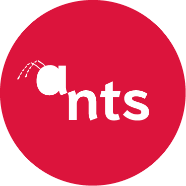

UMU

Research Group

ants research group
The ANTS Research Group, part of the Intelligent Systems Group at the University of Murcia (UMU), develops advanced intelligent IT services and applications across heterogeneous network environments, including IPv4/IPv6, ad hoc, sensor, and cellular infrastructures. Its research addresses core challenges in mobility, multicast, security, and dynamic network management, combining theoretical rigor with practical implementation.
A central asset of ANTS is Gaia Lab, an experimental environment for 5G and beyond-5G research operated by the Department of Information and Communications Engineering at the Faculty of Computer Science. Gaia Lab integrates distributed virtualization and backhaul resources across multiple sites, supporting cloud-native core network components, SDN/NFV/MEC experimentation, and real-time orchestration through platforms such as OpenStack, Proxmox, OSM, and Kubernetes.
The infrastructure enables multi-access experimentation through 5G SA, SDR-based deployments, LoRaWAN, and C-ITS/PC5 technologies, with programmable high-capacity wired backbones and campus-scale test scenarios. This integrated environment supports reproducible validation from low-TRL exploratory setups to advanced pre-deployment prototyping.
ANTS maintains an active research portfolio in ad hoc and sensor networks, context-aware adaptive multimedia, policy-based management, intelligent transportation systems, optimization and intelligent data analysis, ubiquitous computing, and advanced security and AAA services. Over recent years, this work has produced prototypes, platforms, and deployable outcomes through sustained participation in national and international collaborative projects.